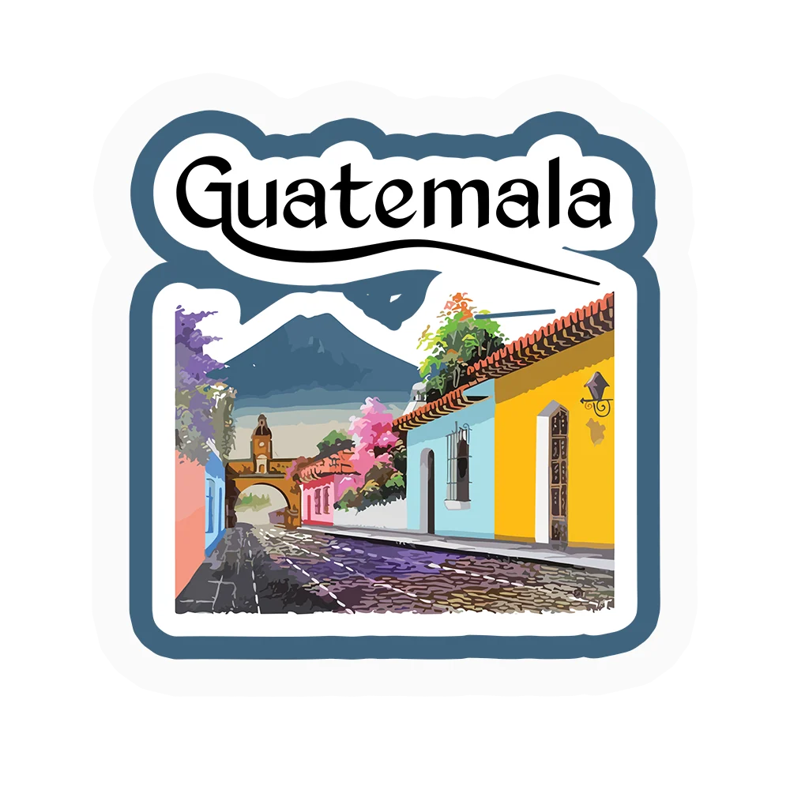
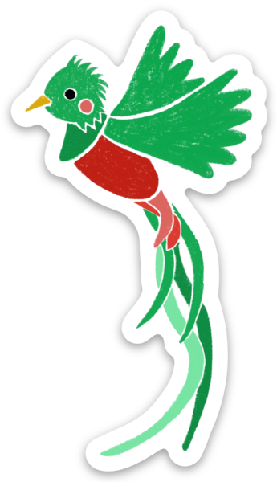
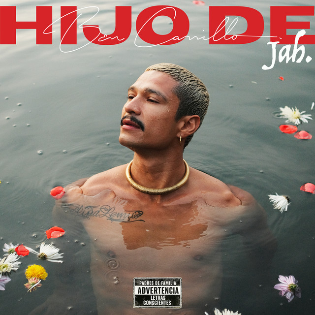

Este es el mundo de
BEN
CARRILLO
de la eterna primavera
hasta el Pacífico ↗
Elegí un capítulo.
O seguí pasando la página →
¿QUIÉN PUTAS ES
BEN CARRILLO?
Carrillo nació en el país de la eterna primavera y emprendió un camino lleno de desafíos en busca de su sueño musical.
Desde muy pequeño mostró su pasión innata por la música y un talento excepcional para la composición. Sin embargo, su travesía no fue fácil. A medida que crecía, enfrentó dificultades personales y un entorno que no siempre le ofrecía las oportunidades que anhelaba.
En la búsqueda de trabajo y oportunidades, encontró en la música su talento y su forma de salir adelante. Hoy vive de ella, ayuda a su familia y lleva a Guatemala con él desde Los Ángeles.
Un artista independiente que sigue construyendo su camino. Por su familia. Por sus raíces. Por quienes nunca se rindieron.
04Ben
Carrillo


DEL PAÍS DE LA
ETERNA PRIMAVERA.
BEN CARRILLO es un cantante, compositor y director creativo guatemalteco radicado en Los Ángeles. Su música mezcla rap, reggae, rock, reguetón y baladas con una voz propia.
Conocé su historia ↗
SIETE CANCIONES. UN UNIVERSO.HIJO
DE JAH
Dale play. Dejá que las canciones cuenten el resto.
SIN UN SOLO
GÉNERO.
Rap. Reggae. Rock. Reguetón.
Y todo lo que todavía falta por contar.
EN PRIMER
PLANO.
TOUR.
MERCH
COLECCIÓN CONCEPTUAL · NO ESTÁ A LA VENTAEstudios de una primera colección. Recibí novedades cuando esté lista.
Quiero enterarme ↗EL SUEÑO
NO SE
SUELTA.
Hay caminos que se vuelven canciones.
Un artista independiente que sigue construyendo su camino. Por su familia. Por sus raíces. Por quienes nunca se rindieron.
EL ECO.
NO PERDAMOS
EL HILO.
Música nueva, próximos shows y lo que viene. Directo a tu correo.
COMING
SOON.
El próximo capítulo está tomando forma.
Quiero ser de los primeros en saberlo ↗EL VIAJE
SIGUE.
La música es el punto de encuentro.
Nos vemos en la próxima canción.
¿Será este el fin
del website?
Seguí bajando. Algunas historias vuelven a empezar.
un poquito más ↓